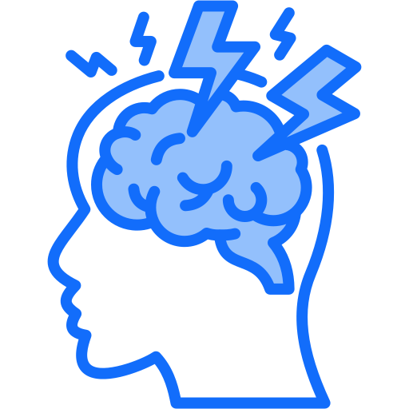
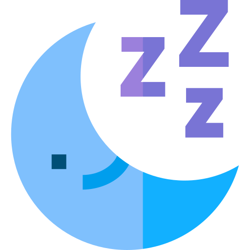

홈
병원소개
진료안내
의료진
진료문의
오시는 길
진료안내

두통 클리닉
만성 편두통, 긴장성 두통의 전문적 치료

수면 클리닉
수면무호흡증, 불면증 등 수면장애 치료
치매 클리닉
조기진단과 체계적인 치료 시스템
×
두통 클리닉
주요 증상
만성 편두통
긴장성 두통
군발성 두통
경추성 두통
진단 방법
두통 일기를 통한 분석
신경학적 검사
필요시 MRI, CT 검사
혈액 검사
치료 방법
약물 치료
주사 치료
생활습관 개선
스트레스 관리
수면 클리닉
주요 증상
수면무호흡증
불면증
하지불안증후군
과다수면
진단 방법
수면다원검사
수면 일기 분석
활동기록계 검사
수면 설문지
치료 방법
양압기 치료
약물 치료
수면위생 교육
인지행동치료
치매 클리닉
주요 증상
기억력 저하
판단력 감퇴
언어능력 저하
일상생활 수행의 어려움
진단 방법
신경인지검사
뇌 MRI 검사
혈액검사
치매선별검사
치료 방법
약물 치료
인지재활치료
생활습관 개선
가족 교육